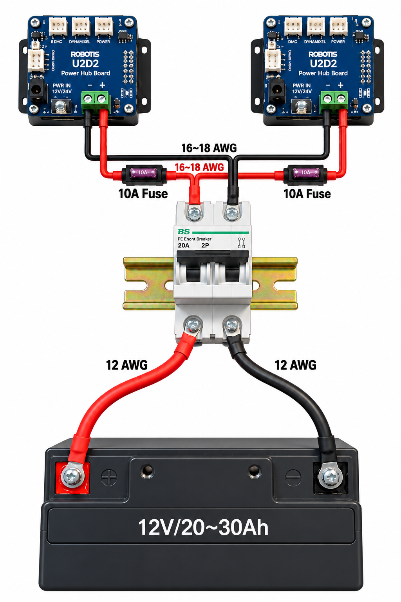

① 選擇商品
到訪者透過 UI 選擇商品。
留下每次實作、測試與發現，接續累積完整版本歷程。
回報移入垃圾桶後，不顯示於一般列表、統計與匯出。可還原；永久刪除無法復原。
ZIP 保留原始附件格式；已永久移除的附件僅記錄移除資訊。單筆回報可從回報卡片匯出。
2026-10-12 會議確認的展示方向
規劃整合 XLe 車體、機械手臂、使用者介面與視覺辨識：到訪者選擇商品後，車體前往貨架，辨識並夾取指定商品，最後移動至交付區完成交付。
到訪者透過 UI 選擇商品。
車體移動至指定貨架前。
攝影機辨識目標，機械手臂取物。
車體前往交付區，手臂交付商品。
完成比例以工作主題的已完成狀態計算，進度回報數量不代表完成百分比。
載入整體進度中…
讀取中…
讀取中…
詳細內容見「討論重點」分頁。
1005 討論前的規劃，保留作為備選或加值功能參考。單一功能容易被問「就這樣？」，把 A 類主線＋B 類加值組合成完整流程最有說服力。
組員可新增、修改、上傳商品圖片；只有管理員能刪除。圖片上傳後需管理員才能刪除。
此頁僅管理員登入後顯示；設定資料由後端驗證權限。
管理者模式已啟用。可在「分工 & 時程」登出。
測試站：XLeRobot-Staging・v1.4.0 測試版
預設關閉；管理員始終可查看編號。設定適用所有組員。
適用 PDF 與 ZIP、所有匯出範圍。權限由伺服器驗證。
預設關閉；管理員始終可以查看。僅開放查看，不會開放修改或刪除。
預設關閉。關閉時僅管理員可操作；切換不會改變既有完成狀態。
一鍵下載 ZIP：包含進度回報、分工時程、採購清單、風險與設定、操作紀錄，以及目前仍保留的附件、商品圖片和報銷憑證。
也包含資料庫快照、可讀取的 JSON、檔案核對清單與網站程式。已永久移除的檔案無法備份；雲端憑證與管理員金鑰不包含在內。打包期間請保留此頁，完成後請將 ZIP 儲存到電腦。
上次成功備份時間：載入中…
通知透過 Railway 設定的 DISCORD_WEBHOOK_URL 傳送到 Discord 頻道。
進度回報通知狀態：載入中…
進度回報通知一律即時發送，不受「10 分鐘合併」影響。進度回報事件與其他通知共用總開關，包含恢復有效。關閉時不建立新通知，既有待送通知暫停；重新啟用後補送。
集中查看歷史分工附件、進度回報附件、商品圖片及報銷憑證。僅管理員可存取。
規劃將機械手臂安裝於 XLe 車體，讓到訪者透過 UI 選擇商品。車體前往貨架後以攝影機辨識商品，由手臂夾取，再移動至交付區交付商品。
以上為 10/12 會議紀錄；配置與實作細節尚待確認。
紅色為優先處理。
這些資訊會影響題目選擇，建議先跟組員或教授確認。
目前採單一方案：行動電源負責底盤、LattePanda 與 5 V 周邊；兩隻手臂改由 12 V 電瓶獨立供電。以下接線為初版配置，實作前仍須逐項確認保護元件、線徑、端子與實測電流。
行動電源不再供應兩隻手臂；C1 專供底盤＋頭部舵機，A1／A2 維持原本 5 V 配置。C2、C3 暫時保留。
12 V 電瓶經 20 A 雙極斷路器後分成左右兩路，各路正極配置 10 A 保險絲，再接至各自的 U2D2 Power Hub Board。

保留原網站的檢查功能。以下不是已驗證完成的結論；實際接線前請逐項確認，勾選狀態只保留在本次開啟期間。
不論選哪一題都會遇到。紅色代表若沒處理，專題很可能卡住。
以下是依 10/12 會議方向擬定的準備題，不代表教授實際提問。
展示可整合 UI、移動平台、視覺辨識及機械手臂，驗證跨系統協作；實際效能仍需測試。
目前仍在評估。若採雙臂，必須定義第二隻手臂的具體用途。
須評估總高度、重心、配重與舵機承載能力，並評估上層平台配置。
規劃先以展示配置圖和操作流程圖定義步驟，再逐項實測；目前不應宣稱整套流程已完成。
AGV 負責跨貨架與交付站點移動，手臂負責取放物品。重點是移動、辨識與操作的系統整合，並用到站誤差、夾取成功率及全流程時間驗證。
目前已有底盤與雙臂分別控制的基礎；統一控制、視覺校正與完整自主交付仍需實測。答辯時應依當天實際完成的功能與測試證據更新。
現有設備具備雙臂，但第二隻手臂應有明確分工；若無法證明雙臂優勢，就先以單臂流程完成穩定展示，再設計比較實驗。
區分官方既有功能與團隊自行完成的整合控制、電瓶配電、任務流程、視覺校正與實驗設計；只有完成且有紀錄的項目才列為成果。
為了讓手臂隨 AGV 移動。應量測實際平均／峰值電流與續航，並比較一顆共用與兩顆獨立電瓶的配線、重量及故障隔離。
可能發生瞬間壓降。需實測兩臂同動電流、供電端電壓及通訊穩定性，並確認接線、保護與低電壓處置。
規劃到站校正、相機與手臂座標轉換及容許誤差判定；超過容許範圍則重新定位或安全停止。
需要相機內外參、相機與機械手臂座標系的校正；透過已知標定物量測轉換誤差，再驗證末端能否到達。
將辨識、定位、夾取、交付拆成狀態，設計夾取確認、有限次重試、停止與人工接管，記錄失敗原因。
事先定義成功條件與測試次數，分別量測到站、辨識、夾取、交付及完整任務成功率與耗時，並公開失敗樣本。
準備到場校正、分段展示、人工接管與實測影片；影片標示為預錄，不能代替現場成功率。
透過車體重心與配重、手臂負載、可達工作空間、夾持設計、重複定位與供電配置的量測呈現工程取捨。
先自己想答案，再點開看回答方向。以下為歷史題目，僅供參考。
適用：手臂編號 6／4（學校）、單板電腦、XLeRobot 車體與行動電源（教授資產）。勾選狀態只保留在本次開啟期間，重新整理後會清空。
全組共用工作主題與目標，管理員可設定完成權限；各階段成果與新附件請統一至「進度回報」新增。
第 14 週就要有「已經可以交」的成果，之後都是加分。
換電腦或在單板電腦上重建環境時使用。一鍵安裝 Python、Thonny、Miniforge、conda 環境 lerobot 與 XLeRobot 專題程式，完成後桌面會出現「啟動機器」。原本網站上的 v5 安裝包未經測試，已移除。
檔案約 370 MB，放在 Google 雲端由連結下載，不放在網站內。解壓 RAR 需要 7-Zip 或 WinRAR。
D:\專題 整包複製到 專題\。專題安裝.exe，按確定後保持網路連線，看黑色視窗的 1/9–9/9 進度，不要關閉。conda activate lerobot → set PYTHONPATH=src → cd software → python examples/4_xlerobot_teleop_keyboard.py；啟動器也可選擇 Xbox、Joy-Con 等範例。保留既有技術來源；舊版方向評估僅供研究歷程參考，與目前展示方向需分開判讀。
可行性分數、難度與成本為依你目前條件（機械系、程式基礎、LattePanda 單板電腦、1–1.5 學期）所做的工程判斷；感測器價格為約略市價，依通路浮動。